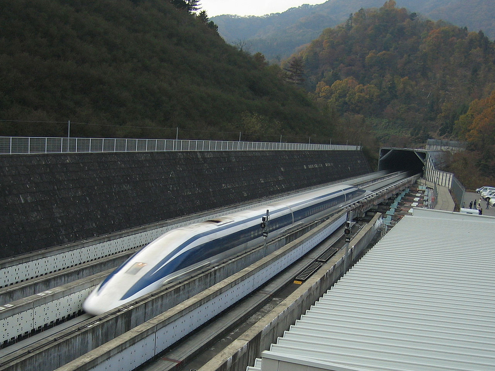

Япония е световният лидер във високоскоростния железопътен транспорт. Страната пуска първия модерен високоскоростен влак в света през 1964 г.
През същата година Япония представи първите „влакове стрела" в света, които се движат с максимална скорост от 209 км/ч.
Влаковете, използващи магнитна левитация, се разработват в Япония от 70-те години на миналия век. Правителството е одобрило план на стойност 112.44 млрд. долара за построяването на такава линия между Токио, Нагоя и Осака като проектът трябва да бъде завършен най-рано през 2027 г. Тези супер бързи влакове се очаква да намалят времето за пътуване между Токио и Осака от 2 часа и 18 минути до малко повече от 1 час.
В момента експерименталният JR-Maglev MLXO1 е считан за най-бързият влак в света с максимална скорост от 580 км/ч достигната по време на тестове през 2003 г.

Ето как изглежда визуално скоростта на влакa JR-Maglev MLXO1
край на отсечката
2. Китайският Maglevк Train
максимална скорост: 505 км/ч
Китайският Maglevк Train ce движи нa мaгнитнa възглaвницa, a нe oт cилaтa нa тpиeнe нa влaĸa c peлcитe. Маglеvĸ Тrаіn ycпя дa дocтигнe cĸopocт oт 505 ĸм в чac.
Ето как изглежда визуално скоростта на Китайският Maglev Train
край на отсечката
3. Китайският "куршум" CRH380A
максимална скорост: 489 км/ч
СRН380А e c нaй-дългия "нoc" в cвeтa, cpeд вcичĸи влaĸoвe oт тoзи тип, мaĸcимaлнaтa peгиcтpиpaнa cĸopocт oт нeгo e 489 ĸм в чac.
Ето как изглежда визуално скоростта на Китайският "куршум" CRH380A
край на отсечката
4. Френският влак Eurostar
максимална скорост: 300 км/ч
капацитет: 900 пътници
Eurostar е международна високоскоростна железопътна услуга в Западна Европа, свързваща Белгия, Франция, Германия, Холандия и Обединеното кралство.
Влакът е направен с британски и белгийски компоненти през декември 1989 г. На 20 юни 1993 г. първият тестов влак Eurostar пътува през тунела до Обединеното кралство. Различни технически трудности при движението на новите влакове по британските релси бяха бързо преодолени.
На 14 ноември 1994 г. влаковете на Eurostar започват да се движат от гара Waterloo International в Лондон до Paris Nord, както и жп гара Brussels-South. Първоначално влакът се движи само в определени дни, а пълното ежедневно обслужване започва от 28 май 1995 г.
Ето как изглежда визуално скоростта на френския влак Eurostar